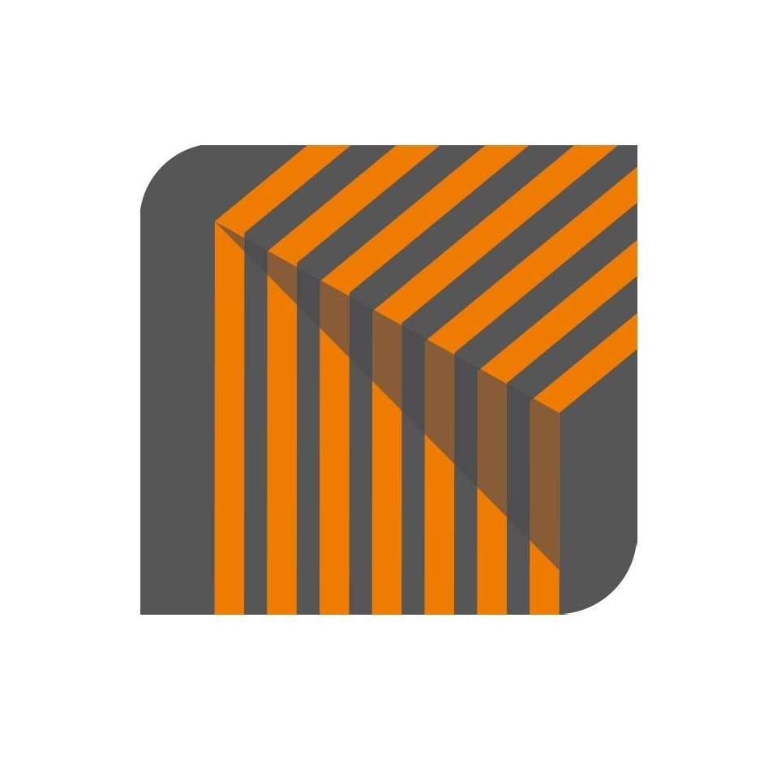
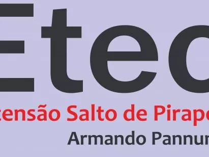

Gustavo Miguel Oliveira Biscaro
Cidade: Sorocaba - SP
Telefone: (15)99132-6279
Endereço: Rua Frei Paulo Maria, 126, Jd. Das Magnólias
gustavo.biscaro@hotmail.com
Objetivo
Em busca do primeiro emprego na área de desenvolvimento, com foco em programação web (front-end).
Formação
Formação em técnico de informática
ETEC Fernando Prestes, Sorocaba, São Paulo.
Data: 2013 - 2014
Graduação em Marketing (Tecnólogo)
Uninter, Sorocaba, São Paulo.
Data: 2017 - 2019
Graduando em Engenharia Da Computação
Univesp, Sorocaba, São Paulo.
Data: 2018 - 2022
Experiência
KG2 Engenharia
Período: 2020 - atualmente
Função: Estagiário de TI
Ativdades:
- Suporte e manutenção de computadores e impressoras.
- Gerenciar um sistema industrial de engenharia, na parte de CRMs e base de dados.
- Mexer com ramais e pontos eletrônicos.

ETEC Armando Pannunzio
Período: 2019 - 2020
Função: Estagiário de TI
Ativdades:
- Suporte e manutenção de computadores e impressoras.
- Configuração e estruturação de redes.
- Mexer com sistema de câmeras e vigilância.

Habilidades
| Tecnologia |
Nível |
|
Avançado |
 |
Avançado |
 |
Intermediário |